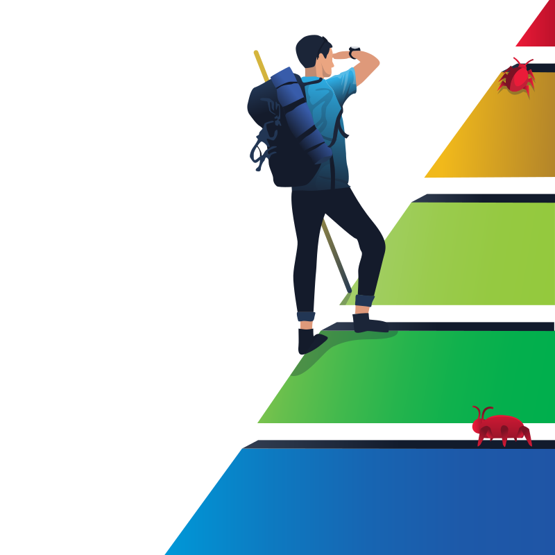

Summit
Can you chase a simulated adversary up the Pyramid of Pain until they finally back down?
Introduction
In the "Summit" challenge on TryHackMe, we engaged in a simulated threat detection exercise, applying the concepts of the Pyramid of Pain to detect and prevent malware execution.
Step 1: Detecting sample1.exe
After launching the provided virtual machine and accessing the application, we received an email
from Sphinx with the attachment sample1.exe. We submitted this sample to the
Malware Sandbox for analysis.
The analysis provided the file's hash values. Recognizing that file hashes are at the base of the Pyramid of Pain and are trivial for attackers to change, we proceeded to block this specific hash to prevent the malware's execution.
# Steps to block the hash:
1. Navigate to 'Manage Hashes' in the application menu.
2. Select 'SHA256' as the hash type.
3. Paste the hash value obtained from the analysis.
4. Submit the hash to add it to the blocklist.
Successfully adding the hash to the blocklist prevented sample1.exe from executing and
provided the first flag: THM{f3cbf08151a11a6a331db9c6cf5f4fe4}.
Step 2: Detecting sample2.exe
Sphinx then provided sample2.exe, a recompiled version of the previous malware with a
different hash. This time, the malware exhibited network activity, communicating with the IP address
154.35.10.113.
To block this malicious communication:
# Steps to block the IP address:
1. Navigate to 'Firewall Manager' in the application menu.
2. Create a new egress rule with the following parameters:
- Source IP: Any
- Destination IP: 154.35.10.113
- Action: Deny
3. Apply the rule to block outbound traffic to this IP.
Implementing this firewall rule prevented sample2.exe from communicating with its
command and control server, yielding the second flag:
THM{2ff48a3421a938b388418be273f4806d}.
Step 3: Detecting sample3.exe
The next iteration involved sample3.exe, which used the domain
emudyn.bresonicz.info for its command and control communication. To counter this:
# Steps to block the domain:
1. Navigate to 'DNS Filter' in the application menu.
2. Create a new rule with the following parameters:
- Domain Name: emudyn.bresonicz.info
- Action: Deny
3. Apply the rule to block DNS resolution for this domain.
Blocking the domain disrupted the malware's ability to resolve its C2 address, rendering the sample
ineffective. This action granted the third flag: THM{9f205f17cc443cf3ee41b403a596fd7c}.
Step 4: Detecting sample4.exe
The fourth sample, sample4.exe, leveraged a custom DNS protocol to bypass standard
detection. The sandbox revealed connections to 3.65.41.133 and a series of encoded
subdomains.
To counteract this tactic, we created a DNS wildcard block:
# DNS wildcard blocking:
1. In DNS Filter, create a rule:
- Domain Name: *.bresonicz.info
- Action: Deny
2. Apply the rule to deny all subdomain queries to that domain.
This prevented further communication using subdomain-based data exfiltration. The fourth flag was
revealed: THM{3e8b12e88de6eabc984b5f5f01f26f2e}.
Step 5: Detecting sample5.exe
Finally, sample5.exe introduced a behavioral pattern — using
schtasks.exe to create a persistent task and curl to download
payloads. Signature-based detection wouldn’t help here.
Instead, we defined a behavioral detection rule:
# Detection Rule:
If:
parent_process == "sample5.exe"
AND
child_process == "schtasks.exe"
THEN
alert("Persistence attempt via schtasks by malicious process")
Once this rule was added, we successfully detected and neutralized the sample’s persistence
mechanism. The final flag appeared: THM{4c2f7d0e9cc3f2f9b1c9c2a0e2cf0f4f}.
Conclusion
"Summit" was a creative exploration of adversary behavior across the Pyramid of Pain. As challenges progressed, we moved from basic IOCs (hashes, IPs, domains) to more difficult detections like behaviors and TTPs.
- Blocking hashes for quick wins
- Stopping C2 infrastructure using IP/domain rules
- Understanding and reacting to adversary persistence mechanisms
- Creating custom detection logic for long-term defense